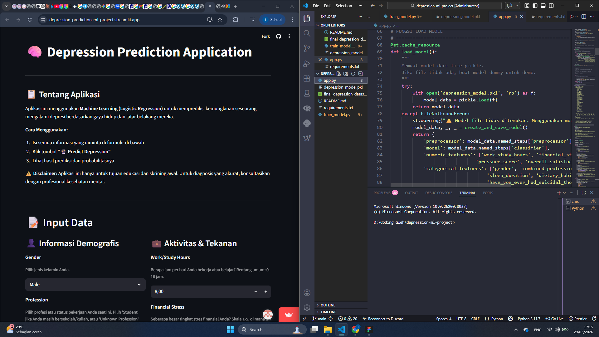
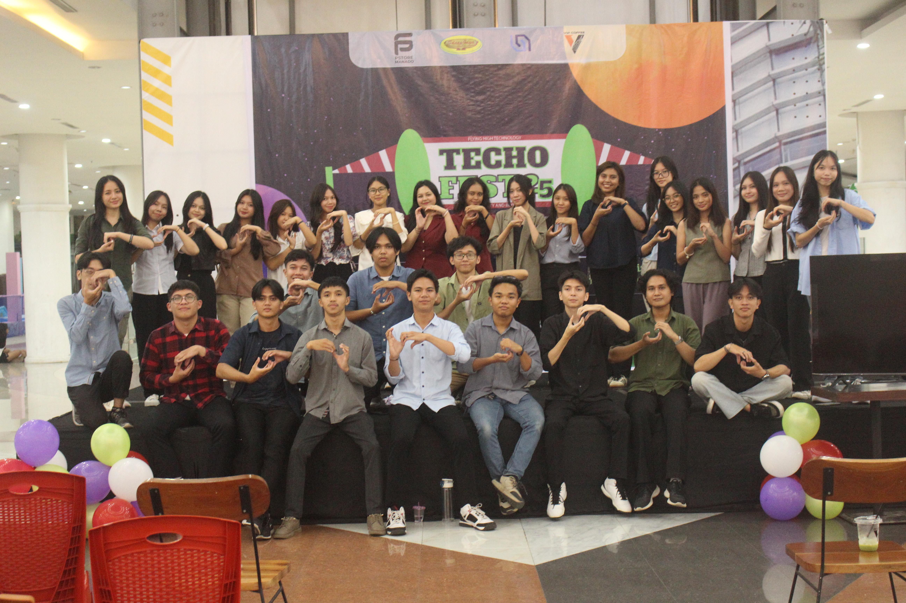
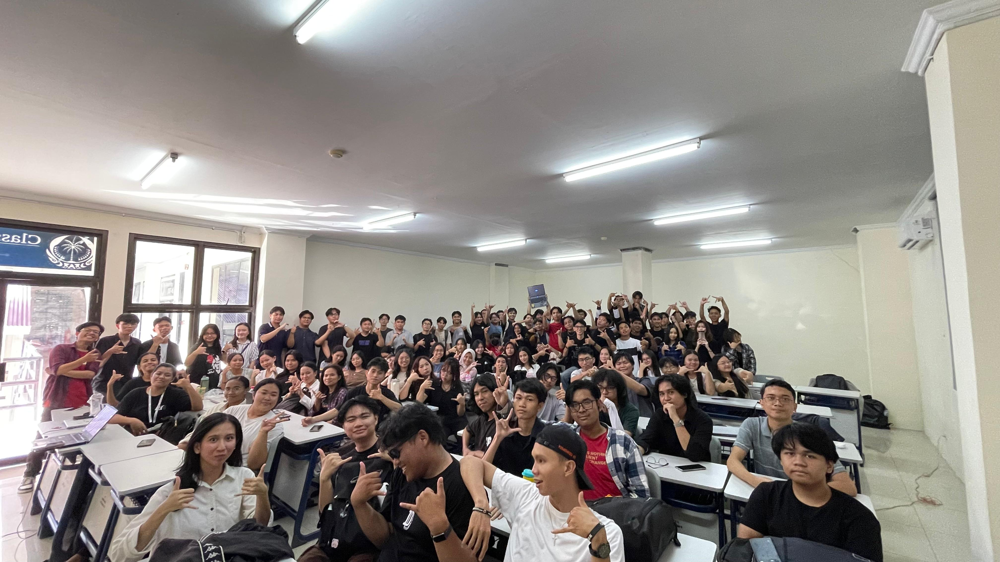

Gallery
Kumpulan foto proyek dan kehidupan kampus.


Proyek & Riset

Design UI/UX FaunaKita
Desain antarmuka untuk website katalog satwa endemik Indonesia.

Depression Prediction — Streamlit
Webapp prediksi risiko depresi dengan algoritma regresi logistik.


Kehidupan Kampus & Komunitas

TechoFest Unity 2025
Event teknologi tahunan UKM Unity Fatek Unsrat.

Hari Terakhir Praktikum TBD
Foto bersama di akhir praktikum Teknik Basis Data semester 3.